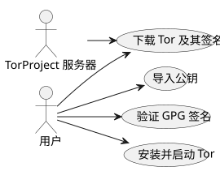

在 Ubuntu 上安装并验证 Tor Browser
Publié le 05 October 2025
简介
在一个数字隐私日益受到威胁的世界里，Tor Browser 仍然是保护匿名和信息自由的重要工具。 然而，执行下载的软件而不先有 是至关重要的验证了其真实性。 本文介绍了一种完整的方法：
-
下载 Tor Browser 及其签名`.asc`
-
验证下载文件的有效性
-
在 Ubuntu 上安装并启动 Tor Browser
-
将其添加到桌面菜单以供日常使用
-
通过 Tor 探索教育资源和道德的 OSINT
下载 Tor 及其签名
为Tor浏览器创建一个专用文件夹：
mkdir -p ~/workspace/tipiak/tor
cd ~/workspace/tipiak/tor然后下载Tor浏览器的归档文件及其签名：
wget https://www.torproject.org/dist/torbrowser/14.5.7/tor-browser-linux-x86_64-14.5.7.tar.xz
wget https://www.torproject.org/dist/torbrowser/14.5.7/tor-browser-linux-x86_64-14.5.7.tar.xz.asc签名的加密验证
此步骤是必不可少的为了确保下载的文件确实来自 Tor Project 并且未被修改。
导入 Tor 项目的公钥
gpg --auto-key-locate nodefault,wkd --locate-keys torbrowser@torproject.org�检查密钥是否已正确导入：
gpg --list-keys torbrowser@torproject.org2. 检查签名
gpg --verify tor-browser-linux-x86_64-14.5.7.tar.xz.asc tor-browser-linux-x86_64-14.5.7.tar.xz如果一切正确，将显示以下消息：
gpg: Good signature from "Tor Browser Developers (signing key)"如果出现未认证密钥警告，这仅仅意味着您尚未签署 Tor 项目的可信密钥，但该签名仍然有效。
实践案例：签名有效但密钥未认证
在验证过程中，经常会遇到这样的消息：
gpg --verify tor-browser-linux-x86_64-14.5.7.tar.xz.asc tor-browser-linux-x86_64-14.5.7.tar.xz
gpg: Signature faite le mar. 16 sept. 2025 14:26:26 CEST
gpg: avec la clef RSA CAAE408AEBE2288E96FC5D5E157432CF78A65729
gpg: Bonne signature de « Tor Browser Developers (signing key) <torbrowser@torproject.org> » [inconnu]
gpg: Attention : cette clef n'est pas certifiée avec une signature de confiance.
gpg: Rien n'indique que la signature appartient à son propriétaire.
Empreinte de clef principale : EF6E 286D DA85 EA2A 4BA7 DE68 4E2C 6E87 9329 8290
Empreinte de la sous-clef : CAAE 408A EBE2 288E 96FC 5D5E 1574 32CF 78A6 5729此消息表明签名在技术上是“有效的”（文件未被修改），但您的 GPG 系统无法 验证对该密钥本身的信任。为了消除此疑虑，必须比较主密钥的指纹 (EF6E 286D DA85 EA2A 4BA7 DE68 4E2C 6E87 9329 8290) 与Tor Project官方网站上发布的内容相同。
根据官方网站，预期的指纹是：EF6E286DDA85EA2A4BA7DE684E2C6E8793298290。
由于显示的印记由`gpg`如果它*完全*对应于官方网站的那个，您可以确定密钥是合法的且文件是安全的。‘未认证密钥’的警告则是关于您本地 GPG 配置的信息，而非关于签名的有效性或文件的真实性。
为什么要验证签名？
验证 GPG 签名是数字安全的基本行为。 它可以：
-
保证真实性已下载的软件
-
防止受恶意行为者破坏的文件被安装
-
参加数字主权个体的
-
�促进负责任且符合伦理的数字文化

提取和启动 Tor Browser
解压已下载的压缩包：
tar -xvf tor-browser-linux-x86_64-14.5.7.tar.xz
cd tor-browser然后启动浏览器：
./start-tor-browser.desktop首次启动时，将打开一个配置窗口以建立与Tor网络的连接。
集成到Ubuntu桌面
要将 Tor Browser 添加到应用程序菜单：
./start-tor-browser.desktop --register-app您 可以 然后 :
-
从应用程序菜单启动 Tor Browser
-
将其添加到 Dock 收藏夹
-
如需，创建快捷键

使用Tor探索教育资源
Tor 不仅仅是一个匿名工具。 它是一个通往教育和科研资源的门户，尤其在以下领域：
-
开源情报（Open Source Intelligence）
-
教育共享和开源
-
https://archive.org(通过 Tor 访问以获得更高的隐私)
-
https://github.com/(可通过 Tor 访问)
-
https://librarygenesis.pro(开放获取科学文献)
-
知识的传播与对数字社会中人类的理解
-
关于数字文化、言论自由和获取知识的资源
-
自由的网络安全和技术伦理文档
Tor 浏览器更新
为了确保最佳安全性，保持 Tor Browser 更新至关重要。浏览器内置了一个可以通过命令行触发的自动更新机制。
从 Tor Browser 安装目录，只需重新启动启动脚本：
cd ~/workspace/tipiak/tor/tor-browser
./start-tor-browser.desktop启动时，Tor Browser 会自动检查是否有新版本。如果有，它会为您下载并安装。
这种简单的方法可确保您始终拥有最新的安全补丁和最新的改进，这对于安全浏览至关重要。
结论
检查自己的下载是所有希望在安全数字环境中前进的人必不可少的习惯。 以验证的方式安装 Tor，这是保护其数字完整性, 保持对自由软件的信任, et 加强其信息自主性.
数字安全是良知的行为，而非偏执。
参考文献
-
Tor 项目官方网站 :https://www.torproject.org/download/[https://www.torproject.org/download/]
-
签名验证文档：https://support.torproject.org/tbb/how-to-verify-signature/[https://support.torproject.org/tbb/how-to-verify-signature/]
-
Ubuntu 文档：https://ubuntu.com[https://ubuntu.com]
-
教育档案：https://archive.org/details/opensource[https://archive.org/details/opensource]
|
本文属于 安全与数字意识 系列 旨在推广负责任且富有教育意义的做法 �围绕自由工具。 |